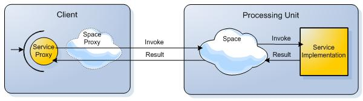

Executor based remoting uses Executors to implement remoting capabilities on top of the space. Executor based remoting allows for direct invocation of services, both in synchronous and an asynchronous manner as well as broadcast capabilities. Executor remoting works with services that are exposed within a processing unit that started a collocated space.

In order to support remoting, the first step is to define the contract between the client and the server. In our case, the contract is a simple interface. Here is an example:
public interface IDataProcessor
{
// Process a given Data object, returning the processed Data object.
Data ProcessData(Data data);
}
The Data object should be Serializable.
Next, an implementation of this contract needs to be provided. This implementation will "live" on the server side. Here is a sample implementation:
[SpaceRemotingService]
public class DataProcessor : IDataProcessor
{
public Data ProcessData(Data data)
{
data.Processed = true;
return data;
}
}
The next step is hosting the service in the grid. Hosting the service is done on the server side within a Processing Unit - all types which have the [SpaceRemotingService] attribute will automatically be created and hosted:
[SpaceRemotingService]
public class DataProcessor : IDataProcessor
{
...
}
Hosting services is done on a Processing Unit that starts an embedded space. For more details regarding service hosting, see the Domain Service Host topic.
In order to use the exported IDataProcessor on the client side, the client should use the IDataProcessor interface directly and construct a proxy to the service using the appropriate builder:
ISpaceProxy spaceProxy = // obtain a space proxy
ExecutorRemotingProxyBuilder<IDataProcessor> proxyBuilder = new ExecutorRemotingProxyBuilder<IDataProcessor>(spaceProxy);
IDataProcessor dataProcessorProxy = proxyBuilder.CreateProxy();
The above example uses the ExecutorRemotingProxyBuilder in order to create the remoting proxy which can then be used for remote invocation.
By default, the service type full name will be used as its lookup name. However, it is possible to specify a specific name if the service is hosted under a different lookup name. Specifying a lookup name is done by supplying the builder with a lookup name in the following manner:
ISpaceProxy spaceProxy = // obtain a space proxy
ExecutorRemotingProxyBuilder<IDataProcessor> proxyBuilder = new ExecutorRemotingProxyBuilder<IDataProcessor>(spaceProxy);
proxyBuilder.LookupName = "MyServiceName";
IDataProcessor dataProcessorProxy = proxyBuilder.CreateProxy();
Learn how to host a service under specific lookup names in Domain Service Host.
Many times, space remoting is done by exporting services in a space with a partitioned cluster topology. The service is exported when working directly with a cluster member (and not against the whole space cluster). When working with such a topology, the client side remoting automatically generates a random routing index value. In order to control the routing index, the following interface can be implemented:
public interface IRemoteRoutingHandler
{
/// <summary>
/// Compute the routing field value based on the remoting invocation. If null
/// is returned, will use internal calcualtion of the routing index.
/// </summary>
/// <param name="invocation">Object representing the invocation.</param>
/// <returns>routing field value based on the remoting invocation. If null
/// is returned, will use internal calcualtion of the routing index.</returns>
Object ComputeRouting(SpaceRemotingInvocation invocation);
}
Here is a sample implementation which uses the first parameter Data object type as the routing index.
public class DataRemoteRoutingHandler : IRemoteRoutingHandler
{
public Object ComputeRouting(ISpaceRemotingInvocation invocation)
{
if (invocation.Method.Name.Equals("ProcessData"))
{
Data data = (Data) invocation.Arguments();
return data.DataType;
}
return null;
}
}
Finally, the wiring is done in the following manner:
ISpaceProxy spaceProxy = // obtain a space proxy
ExecutorRemotingProxyBuilder<IDataProcessor> proxyBuilder = new ExecutorRemotingProxyBuilder<IDataProcessor>(spaceProxy);
proxyBuilder.RoutingHandler = new DataRemoteRoutingHandler();
IDataProcessor dataProcessorProxy = proxyBuilder.CreateProxy();
The above option of using the remote routing handler is very handy when not using attributes. If no routing handler is specified, the default routing handler will be used which is attributed based. It uses the [ServiceRouting] attribute in order to define which of the parameters control the routing. Here is an example:
public interface IMyService
{
void DoSomething([ServiceRouting] int param1, int param2);
}
In the above example, the routing is done using the param1 value. When using complex objects, a property or a field name of the complex object name can be specified to be invoked on the parameter, in order to get the actual routing index. Here is an example:
public interface IMyService {
void doSomething([ServiceRouting("RoutingProperty")] Value param1, int param2);
}
In the above example, the RoutingProperty property is called on the Value object, and its return value is used to extract the routing index.
executor remoting supports asynchronous execution of remote services using the conventional IAsyncResult interface.
Since the definition of the interface acts as the contract between the client and the server, asynchronous invocation requires the interface to also support the same business method, returning an IAsyncResult instead of its actual return value and the conventional Begin End methods. The asynchronous nature is only relevant on the client side, provided by the asynchronous remoting capability.
The following code demonstrates how such service would be implemented:
public interface ISimpleService
{
int Calc(int value1, int value2);
IAsyncResult BeginCalc(int value1, int value2, AsyncCallback callback, Object stateObject);
int EndCalc(IAsyncResult asyncResult);
}
Both the client and server share the same interface, with the interface holding both synchronous and asynchronous services. Here is an example:
In the above case, the server implementation does not need to implement the BeginCalc and EndCalc methods (simply return null or throw NotSupportedException for the BeginCalc and EndCalc methods). The client side can choose which service to invoke.
You should note the naming convention and the signature of the asynchronous method in this case, which follows the conventional naming convention of the .NET framework.
If the regular method looks as follows:
T DoSomething(String arg), T being the return value type, then the asynchronous method should have the following two methods:
IAsyncResult BeginDoSomething(String arg, AsyncCallback callback, Object stateObject).
T EndDoSomething(IAsyncResult asyncResult)
In other words, the regular method should be wrapped with two additional methods, one is prefixed with Begin and the return value should be an IAsyncResult, this method starts the asynchronous invocation. And an additional method prefixed with End and the return value is of the synchronous method which receives the IAsyncResult as its single parameter.
Executor remoting supports transactional execution of services. The client can pass a transaction as one of the service invocation parameters (if specified by the service contract) and the transaction itself is passed to the server and the service can use that transaction as part of its logic. The transaction lifecycle itself can controlled either on the client side or at the service. (Note, exceptions on the server side will simply propagate to the client side, and will cause a rollback only if the client explicitly rolls back the transaction.)
Here's a simple example of a service that supports transactions:
public interface ITransactionalService
{
Object DoSomething(Object arg1, ITransaction tx);
}
When using broadcast with executor remoting, a distributed transaction must be used and not a local.
Some invocations might be one way, which means that the client executes some kind of a service operation and he does not require a return value or even a guarantee of successful execution. For instance, print something at the service console. This can be done by specifying a [SpaceServiceOperation] attribute over the one way operation, demonstrated in the following example:
public interface ISimpleService
{
[SpaceServiceOperation(OneWay=true)]
void Print(String msg);
}
A one way operation must have a return type of void and by its nature, has no guarantee that the operation was executed successfully, if an exception is thrown during the execution at the server side, it will not be propagated to the client.
Space based remoting allows you to inject different "aspects" that can wrap the invocation of a remote method on the client side, as well as wrapping the execution of an invocation on the server side. The different aspect can add custom logic to the execution, for instance, logging or security.
The client invocation aspect interface is shown below. You should implement this interface and wire it to the builder instance, as explained below:
public interface IRemoteInvocationAspect
{
/// <summary>
/// Executed each time a remote invocation is requested allowing a pluggable behavior
/// for invocation dispatch. The aspect can decide whether to return the invocation result value by
/// setting the <see cref="IInvocationInterception.ResultValue"/> or
/// to proceed with the remote invocation process pipeline by using <see cref="IInvocationInterception.Proceed()"/>
/// </summary>
/// <param name="invocation">Object representing the invocation interception.</param>
void Intercept(IInvocationInterception invocation);
}
Here is a simple example of a client logging aspect which does not alter the result value:
public class RemoteInvocationLoggingAspect : IRemoteInvocationAspect
{
void Intercept(IInvocationInterception invocation)
{
Console.WriteLine("Invoking :" + invocation.SpaceRemotingInvocation.LookupName + " "
+ invocation.SpaceRemotingInvocation.Method.Name);
//Proceed with invocation pipeline
invocation.Proceed();
Console.WriteLine("Result :" + invocation.ResultValue);
}
}
An implementation of such an aspect can be wired as follows:
ISpaceProxy spaceProxy = // obtain a space proxy
ExecutorRemotingProxyBuilder<IDataProcessor> proxyBuilder = new ExecutorRemotingProxyBuilder<IDataProcessor>(spaceProxy);
proxyBuilder.SetInvocationAspects(new MyLoggingAspect(), new MySecurityAspect());
IDataProcessor dataProcessorProxy = proxyBuilder.CreateProxy();
There can be one or more aspects supplied to the builder, they will be invoked one after the other according to the order in which they were set. Each aspect can decide whether to continue executing the aspect pipeline invocation using the invocation.Proceed() method, or return the invocation result without continuing to the next aspects by setting a return value using the invocation.ReturnValue property. The final remote invocation it self is an aspect which is the last one to be executed. Plugging custom aspects can decide according to the aspect implementation whether to invoke the actual remote service or not.
The server side invocation aspect interface is shown below. You should implement this interface and wire it to the DomainServiceHost (this is the component that is responsible for hosting and exposing your service to remote clients):
public interface IServiceExecutionAspect
{
/// <summary>
/// Executed each time a service remote invocation is requested allowing a pluggable behavior
/// for service execution. The aspect can decide whether to return the execution result value by
/// setting the <see cref="IInvocationInterception.ResultValue"/> or
/// to proceed with the execution process pipeline by using <see cref="IInvocationInterception.Proceed()"/>
/// </summary>
/// <param name="invocation">Object representing the invocation interception.</param>
/// <param name="service">The service the invocations refers to.</param>
void Intercept(IInvocationInterception invocation, Object service);
}
An implementation of such an aspect can be wired as follows:
DomainServiceHost.Initialize(new MyExecutionLoggingAspect(), new MySecurityExecutionAspect());
The different execution aspects can be wired only once, and that is when the DomainServiceHost is initialized, which means before publishing any service in it.
The execution of the aspects is very similar to the client side aspects, it follows the same pattern of pipeline execution of aspects followed by the specified order. Each aspect can decide whether to continue executing the aspect pipeline execution using the invocation.Proceed() method, or return the execution result without continuing to the next aspects by setting a return value using the invocation.ReturnValue property. The final service execution it self is an aspect which is the last one to be executed. Plugging custom aspects can decide according to the aspect implementation whether to execute the actual operation on the service or not.
When executing a service using Space based remoting, a set of one or more metadata arguments (in the form of a System.Object array) can be passed to the server with the remote invocation. This feature is very handy when you want to pass certain metadata with every remote call that is not part of the arguments of the method you call. A prime example for using meta arguments is security – i.e. passing security credentials as meta arguments, and using a server side aspect to authorize the execution or to log who actually called the method.
To create the meta arguments on the client side you should implement the following interface and inject an instance of the implementing class to the client side proxy:
public interface IMetaArgumentsHandler
{
/// <summary>
/// Create meta data arguments according to the specified remoting invocation.
/// </summary>
/// <param name="invocation">Object representing the invocation.</param>
/// <returns>meta data arguments.</returns>
Object[] CreateMetaArguments(ISpaceRemotingInvocation invocation);
}
The following snippets show how to plug a custom meta arguments handler to the client side remote proxy. The Object array returned by the implementation of the IMetaArgumentsHandler interface will be sent along with the invocation to server side.
ISpaceProxy spaceProxy = // obtain a space proxy
ExecutorRemotingProxyBuilder<IDataProcessor> proxyBuilder = new ExecutorRemotingProxyBuilder<IDataProcessor>(spaceProxy);
proxyBuilder.MetaArgumentsHandler = new MyMetaArgumentsHandler();
IDataProcessor dataProcessorProxy = proxyBuilder.CreateProxy();
The way to access the meta arguments on the server side is to configure a server side execution aspect by implementing the ServiceExecutionAspect and wiring it on the server side as shown above. To access the meta arguments, you should call SpaceRemotingInvocation.MetaArguments on the invocation argument provided to the server side aspect.
When using executor remoting, a remote invocation can be broadcasted to all active (primary) cluster members. Each Service instance is invoked and return a result to its called which in turn reduce these and pass the final result to the application.
The First phase involves the Service invocation:
The Second phase involves reducing the results retrieved from the Services:

In order to use broadcast remoting, the executor broadcast remoting builder should be used:
ISpaceProxy spaceProxy = // obtain a space proxy
ExecutorBroadcastRemotingProxyBuilder<IDataProcessor> proxyBuilder = new ExecutorBroadcastRemotingProxyBuilder<IDataProcessor>(spaceProxy);
IDataProcessor dataProcessorProxy = proxyBuilder.CreateProxy();
When broadcasting remote invocations to all active cluster members, and the remote method returns a result, on the client side a collection of all remote results needs to be processed. By default, if no reducer is supplied, the first result is returned. The executor remoting proxy allows for a pluggable remote result reducer that can reduce a collection of remoting results into a single one. Here is the defined interface:
public interface IRemoteResultReducer
{
/// <summary>
/// Reduce a list of <see cref="SpaceRemotingResult"/> into a single result.
/// </summary>
/// <param name="results">The list of remoting invocation results to reduce.</param>
/// <param name="invocation">Object representing the invocation.</param>
/// <returns>Reduced result.</returns>
Object Reduce(SpaceRemotingResultsCollection results, ISpaceRemotingInvocation invocation);
}
Here's an example of broadcast remoting that executes a specific method of a service on all nodes and then aggregate the results to a single result:
public interface ISearchService
{
//Search for results on the entire cluster
IList<SearchResult> SearchFor(String keyword);
}
The reducer implementation:
public class SearchServiceReducer : IRemoteResultReducer
{
Object Reduce(SpaceRemotingResultsCollection results, ISpaceRemotingInvocation invocation)
{
if (invocation.Method.Name == "SearchFor")
{
List<SearchResult> aggregatedResults = new List<SearchResult>();
foreach(SpaceRemotingResult result : results)
{
if (result.Exception != null)
throw result.Exception
aggregatedResults.AddRange((IList<SearchResult>)result.Result);
}
return aggregatedResults;
}
//If not SearchFor method, return the first result
SpaceRemotingResult firstResult = results[0];
if (firstResult.Exception != null)
throw firstResult.Exception;
return firstResult.Result;
}
}
The wiring is done as follows:
ISpaceProxy spaceProxy = // obtain a space proxy
ExecutorBroadcastRemotingProxyBuilder<ISearchService> proxyBuilder = new ExecutorBroadcastRemotingProxyBuilder<ISearchService>(spaceProxy);
proxyBuilder.ResultReducer = new SearchServiceReducer();
ISearchService dataProcessorProxy = proxyBuilder.CreateProxy();
When the results arrive from a broadcast remoting invocation, they are all collected and assembled as one result collection, a result filter can control this process and decide which results to collect, which results to ignore and when to break the collection process. By default, if no reducer is supplied, the first result is returned. Therefore there's also a filter which breaks the collection process when a single result arrives. In order to use a custom filter, one needs to plug a custom reducer which also implements the filter interface. Here is the defined interface:
public interface IRemoteResultFilter
{
/// <summary>
/// A callback invoked for each result that arrives as a result of a broadcast remote service execution allowing
/// to access the result that caused this event, the events received so far, and the total expected results.
/// </summary>
/// <param name="info">Current filter info.</param>
/// <param name="invocation">Object representing the invocation.</param>
/// <returns>Filter's decision</returns>
SpaceTaskFilterDecision GetFilterDecision(SpaceRemotingFilterInfo info, ISpaceRemotingInvocation invocation);
}
Each time a result arrives the filter is called and the collection process is managed by the 4 possible return results of the filter decision:
Continue - Collect this result and continue.
Skip - Skip this result and continue.
Break - Collect this result and break.
SkipAndBreak - Skip this result and break.
We demonstrate a filter usage by extending the previous example:
public interface ISearchService
{
//Search for results on the entire cluster, when we have enough results return the aggregated results
IList<SearchResult> SearchFor(String keyword, int enoughResults);
}
The reducer implementation:
public class SearchServiceReducer : IRemoteResultReducer, IRemoteResultFilter
{
Object Reduce(SpaceRemotingResultsCollection results, ISpaceRemotingInvocation invocation)
{
...
}
SpaceTaskFilterDecision GetFilterDecision(SpaceRemotingFilterInfo info, ISpaceRemotingInvocation invocation)
{
if (invocation.Method.Name == "SearchFor")
{
//Get enough result parameter from method invocation
int enoughResults = invocation.Arguments[1];
int currentResultsCount = 0;
foreach(SpaceRemotingResult result : info.ReceivedResults)
{
if (result.Exception != null)
return SpaceTaskFilterDecision.Break;
//Count number of results
currentResultsCount += ((IList<SearchResult>)result.Result).Count;
}
//Check if we have enough results
if (currentResultsCount >= enoughResults)
return SpaceTaskFilterDecision.Break;
return SpaceTaskFilterDecision.Continue;
}
//If not SearchFor method, stop on first result
return SpaceTaskFilterDecision.Break;
}
}
The wiring is done the same as above:
ISpaceProxy spaceProxy = // obtain a space proxy
ExecutorBroadcastRemotingProxyBuilder<ISearchService> proxyBuilder = new ExecutorBroadcastRemotingProxyBuilder<ISearchService>(spaceProxy);
proxyBuilder.ResultReducer = new SearchServiceReducer();
ISearchService dataProcessorProxy = proxyBuilder.CreateProxy();